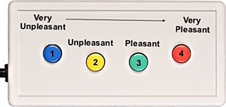

<!DOCTYPE html>
<html>
  <head>
    <title>Welcome (E-FAD Scanner)</title>
    <script src="https://unpkg.com/jspsych@7.1.2"></script>
    <script src="https://unpkg.com/@jspsych/plugin-html-keyboard-response@1.1.0"></script>
    <script src="https://unpkg.com/@jspsych/plugin-image-keyboard-response@1.1.0"></script>
    <script src="https://unpkg.com/@jspsych/plugin-preload@1.1.0"></script>
    <link href="https://unpkg.com/jspsych@7.1.2/css/jspsych.css" rel="stylesheet" type="text/css" />
    <link rel="stylesheet" href="my_experiment_style_MRI.css">
    <script src="./lib/taskflow/client.js"></script>
  </head>
  <body></body>
  <script>
/* TASK INFO: explicit FAD task 4 blocks, 1 per condition, with no practice trials; alternative order to explicitFAD.html */

    /* initialize jsPsych */
    var jsPsych = initJsPsych({
        on_finish: async function() {

          if (window.location !== window.parent.location) {
            // running on server so send data to the server
            var measure = await TaskFlow.Client.Measure.get();
            // get data out of jspsych
            var task_data = JSON.stringify(jsPsych.data.get().values());
            measure.complete = true;
            measure.json = task_data;
            // sync measure with server
            await TaskFlow.Client.Measure.set(measure);
            // continue on!
            TaskFlow.Client.Measure.end();
          } else {
            // running local
            // display the data
            jsPsych.data.displayData();
          }
        }
    });

    /* create timeline */
    var timeline = [];

 /* preload images */
 var preload = {
      type: jsPsychPreload,
      images: ['img/key.png','img/practice1.jpg','img/practice2.jpg','img/practice3.jpg','img/practice4.jpg','sdvp/3068.jpg', 'sdvp/6570.jpg', 'sdvp/SDVPS_1.jpg', 'sdvp/SDVPS_2.jpg', 'sdvp/SDVPS_3.jpg', 'sdvp/SDVPS_4.jpg', 'sdvp/SDVPS_5.jpg', 'sdvp/SDVPS_6.jpg', 'sdvp/SDVPS_7.jpg','sdvp/SDVPS_8.jpg','iaps_neg/1525.jpg', 'iaps_neg/2345_1.jpg','iaps_neg/3150.jpg','iaps_neg/3170.jpg','iaps_neg/7380.jpg','iaps_neg/9140.jpg','iaps_neg/9184.jpg','iaps_neg/9301.jpg','iaps_neg/9326.jpg','iaps_neg/9611.jpg','iaps_neg/9903.jpg','iaps_pos/1463.jpg','iaps_pos/1811.jpg','iaps_pos/2071.jpg','iaps_pos/2154.jpg','iaps_pos/4610.jpg','iaps_pos/5480.jpg','iaps_pos/5829.jpg','iaps_pos/7400.jpg','iaps_pos/7492.jpg','iaps_pos/8380.jpg','iaps_pos/8503.jpg', 'iaps_neut/6150.jpg','iaps_neut/7001.jpg','iaps_neut/7002.jpg','iaps_neut/7009.jpg','iaps_neut/7026.jpg','iaps_neut/7052.jpg','iaps_neut/7055.jpg','iaps_neut/7080.jpg','iaps_neut/7100.jpg','iaps_neut/7150.jpg','iaps_neut/7705.jpg']
    };
    timeline.push(preload);

    /* define welcome message trial */
    var welcome = {
      type: jsPsychHtmlKeyboardResponse,
      stimulus: "Welcome to another Image Rating Task! </p> <p>Press any button for instructions. </p>"
    };
    timeline.push(welcome);

    /* define instructions trial */
    var instructions = {
      type: jsPsychHtmlKeyboardResponse,
      stimulus: `
        <p>In this task, an image will appear on the screen.</p> <p>Using the response pad, please rate <strong>HOW PLEASANT an image is</strong>, as quickly as you can. If the image is...</p>     
          <p><strong>Very unpleasant</strong>, press the button 1</p>
        <p><strong>Unpleasant</strong>, press the button 2</p>
        <p><strong>Pleasant</strong>, press the button 3</p>
        <p><strong>Very pleasant</strong>, press the button 4.</p>
       <p> </div></p>
        <p>Press any button to continue.</p>
      `,
      post_trial_gap: 1000
    };
    timeline.push(instructions);
/*questions for the examiner*/
var questions = {
      type: jsPsychHtmlKeyboardResponse,
      stimulus: "<p>If you have questions or concerns, please signal to the examiner. </p> <p>If not, press any button to continue. </p>"
    };
    timeline.push(questions);

/*define trial awaiting for the scanner keyboard button #5 */
var MRIstart ={
  type: jsPsychHtmlKeyboardResponse,
  stimulus: "<p> Please wait while the scanner starts up. This will take 10 seconds. </strong></p>",
  choices: ['5'],
 prompt: "<p> A cross (+) will appear when the task starts. </p>",
 data: {
    task: 'response'},
    on_finish: function(data){
    data.response;
 }
};
timeline.push(MRIstart);
    /* define test trial stimuli array */
    var test_stimuli = [

    {stimulus:'iaps_neg/1525.jpg'},
        {stimulus:'iaps_neg/2345_1.jpg'},
        {stimulus:'iaps_neg/3150.jpg'},
        {stimulus:'iaps_neg/3170.jpg'},
        {stimulus:'iaps_neg/7380.jpg'},
        {stimulus:'iaps_neg/9140.jpg'},
        {stimulus:'iaps_neg/9184.jpg'},
        {stimulus:'iaps_neg/9301.jpg'},
        {stimulus:'iaps_neg/9326.jpg'},
        {stimulus:'iaps_neg/9611.jpg'},
        {stimulus:'iaps_neg/9903.jpg'},

    {stimulus:'iaps_neut/6150.jpg'},
        {stimulus:'iaps_neut/7001.jpg'},
        {stimulus:'iaps_neut/7002.jpg'},
        {stimulus:'iaps_neut/7009.jpg'},
        {stimulus:'iaps_neut/7026.jpg'},
        {stimulus:'iaps_neut/7052.jpg'},
        {stimulus:'iaps_neut/7055.jpg'},
        {stimulus:'iaps_neut/7080.jpg'},
        {stimulus:'iaps_neut/7100.jpg'},
        {stimulus:'iaps_neut/7150.jpg'},
        {stimulus:'iaps_neut/7705.jpg'},

        {stimulus: 'sdvp/3068.jpg'},
        {stimulus: 'sdvp/6570.jpg'},
        {stimulus:'sdvp/SDVPS_1.jpg'},
        {stimulus:'sdvp/SDVPS_2.jpg'},
        {stimulus:'sdvp/SDVPS_3.jpg'},
        {stimulus:'sdvp/SDVPS_4.jpg'},
        {stimulus:'sdvp/SDVPS_5.jpg'},
        {stimulus:'sdvp/SDVPS_6.jpg'},
        {stimulus:'sdvp/SDVPS_7.jpg'},
        {stimulus:'sdvp/SDVPS_8.jpg'},

        {stimulus:'iaps_pos/1463.jpg'},
        {stimulus:'iaps_pos/1811.jpg'},
        {stimulus:'iaps_pos/2071.jpg'},
        {stimulus:'iaps_pos/2154.jpg'},
        {stimulus:'iaps_pos/4610.jpg'},
        {stimulus:'iaps_pos/5480.jpg'},
        {stimulus:'iaps_pos/5829.jpg'},
        {stimulus:'iaps_pos/7400.jpg'},
        {stimulus:'iaps_pos/7492.jpg'},
        {stimulus:'iaps_pos/8380.jpg'},
        {stimulus:'iaps_pos/8503.jpg'},

      ];
    var fixation = {
  type: jsPsychHtmlKeyboardResponse,
  stimulus: '<div style="font-size:60px;">+</div>',
  choices: "NO_KEYS",
  trial_duration: 1000,
  data: {
    task: 'fixation'
  }
};
var test = {
  type: jsPsychImageKeyboardResponse,
  stimulus: jsPsych.timelineVariable('stimulus'),
  choices: "NO_KEYS",
  trial_duration: 2000,
  stimulus_height: 650,
  maintain_aspect_ration: true,
 };
var response = {
  type: jsPsychHtmlKeyboardResponse,
  stimulus: "<p>How would you rate this image? </p>",
  choices: ['1', '2', '3', '4'],
  trial_duration: 3000,
  response_ends_trial: false,
 data: {
    task: 'response'},
    on_finish: function(data){
    data.response;
 }
};
    var test_procedure = {
      timeline: [fixation,test,response],
      timeline_variables: test_stimuli,
      repetitions: 1,
      randomize_order: false,
      post_trial_gap: 500,
    };
    timeline.push(test_procedure);
    
var debrief_block = {
  type: jsPsychHtmlKeyboardResponse,
  stimulus: function() {

    var trials = jsPsych.data.get().filter({task: 'response'});
    var rt = Math.round(trials.select('rt').mean());

    return `<p>Your average response time was ${rt}ms.</p>
      <p>Press any key to complete the experiment. Thank you for your time!</p>`;
      }
};
timeline.push(debrief_block);


    /* start the experiment */
    jsPsych.run(timeline);

    /*get data */
  

  </script>
</html>